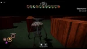
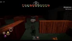

Valem initially teased on July 5th, 2024, and officially released on February 9th, 2025, he is the eighteenth monster added to Pillar Chase 2. He is a bird-like demonic trickster who appears before players at night, luring and hunting them down with the help of his illusions. He originates from The_BladeNinja's Minecraft mod, Beware The Rain, and was added to replace Wendigo from the original Pillar Chase. He is the second monster to be added in the year of 2025, and can be bought for 1350 coins in the shop.
|  When pressing 1 Valem uses this ability, he will float up into the air and turn invisible for 3 seconds, spawning an illusion of himself in the location he used the ability, as well as allowing him to move at high speeds for the duration. The illusions spawned by this ability will play voicelines and face towards nearby survivors, who will be beckoned by these illusions visually along with auditorily. When a survivor is near an illusion it will passively drop items, and give the survivors one of three buffs: 35 HP healed, 1.25x Sprint Speed, or regen stamina TBA. However survivors being near the illusions will be highlighted for Valem. Which Valem can teleport to at any time by holding E while looking at the illusion of his choice, causing a explosion that deals 30 damage to anyone close enough. 10 Second cooldown, Illusions lasts 32 seconds. Deceives survivors with gifts and highlights |
 When pressing 2 Valem uses this ability, he will envelop himself in black smoke and gain a buff boosting the damage of his M1s by 20. The tradeoff however is no longer being able to sprint, instead Valem walks at about 40% increased speed and passively highlights players nearby while active. 10 Second cooldown, lasts 10 seconds. |